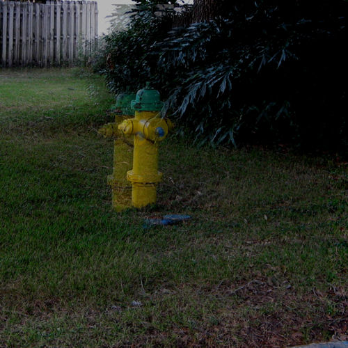
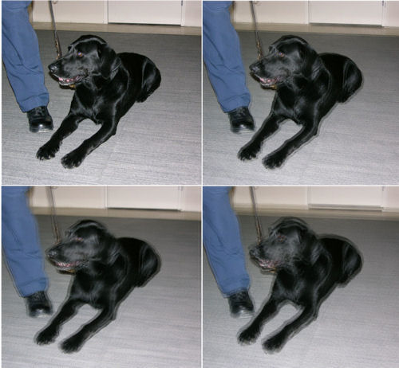
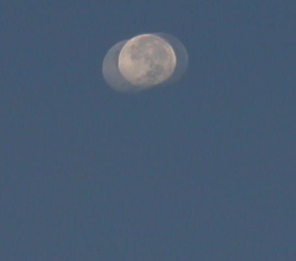

After refractive surgeries like LASIK, LASEK, and PRK, some patients see multiple images, sometimes called ghost images or ghosts. The medical term is "monocular polyopia", which literally means "one eye, many images."
Ghosts are caused by corneal irregularities after LASIK. Some patients see a single ghost image, whereas other patients see many. Ghost images may be relatively transparent or so opaque that it is impossible to discern which is the ghost and which is the real image.
Ghosting is more commonly seen at night, but it may occur in all lighting conditions depending on the nature of the corneal irregularity. Ghosting may be a result of induced astigmatism, decentered ablation, or large pupils. In patients with large pupils, light passes through both the treated and untreated areas of the cornea, resulting in a multi-focal cornea. The muti-focal cornea leads to multiple images.


